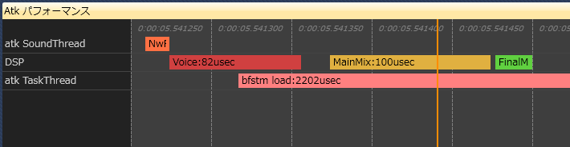

プログラマ向け変更点
NintendoSDK 0.16.0 で行われた NintendoWare オーディオ (nn::atk) の変更点について説明します。
目次
Spy による nn::atk のスレッド処理の可視化
nn::atk のサウンドスレッド、タスクスレッド処理の一部と、nn::audio の DSP 処理を Spy のタイムライン上に可視化しました。
表示の詳細については、Spy.exe の Atk パフォーマンスパネル解説ページを参照ください。
組み込み方法については、SpyAtk サンプルを参照ください。

ドキュメントの改訂
以下の項目を修正しました。
-
プログラミングガイド の クイックスタート の「CircularBufferSink から取得したサンプルデータの利用」で使用していた API に誤りがあったため修正しました。
- nn::atk::SoundSystem::GetChannelCountMax が正しくは nn::atk::SoundSystem::GetRendererChannelCountMax になります。
前者の API は 0.16.0 では廃止されていますので、お手数ですが移行をお願いいたします。